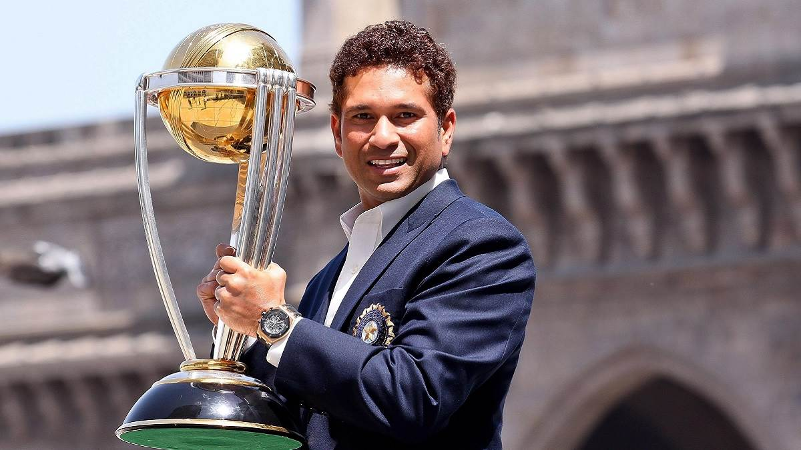
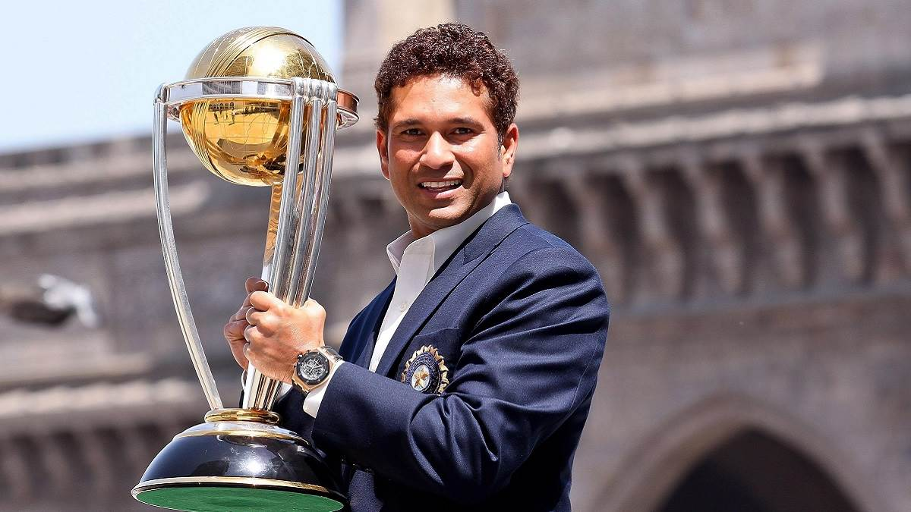

Sachin Ramesh Tendulkar is an Indian former international cricketer who captained the Indian national team. He is widely regarded as one of the greatest batsmen in the history of cricket.
Hailed as the world's most prolific batsman of all time, he is the all-time highest run-scorer in both ODI and Test cricket with more than 18,000 runs and 15,000 runs, respectively.
He also holds the record for receiving the most player of the match awards in international cricket. Tendulkar was a Member of Parliament, Rajya Sabha by presidential nomination from 2012 to 2018.
Tendulkar took up cricket at the age of eleven, made his Test match debut on 15 November 1989 against Pakistan in Karachi at the age of sixteen, and went on to represent Mumbai domestically and India internationally for over 24 years.
In 2002, halfway through his career, Wisden ranked him the second-greatest Test batsman of all time, behind Don Bradman, and the second-greatest ODI batsman of all time, behind Viv Richards.

 
